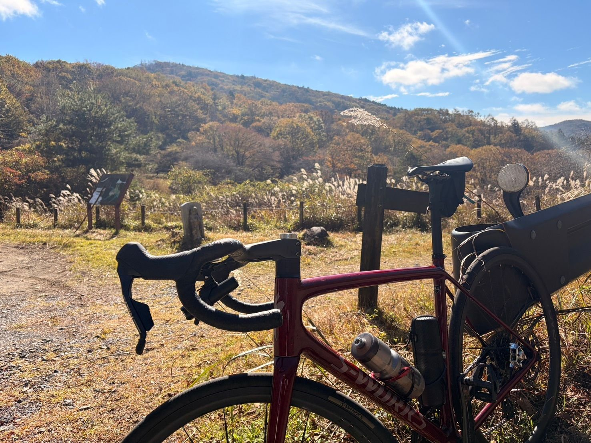
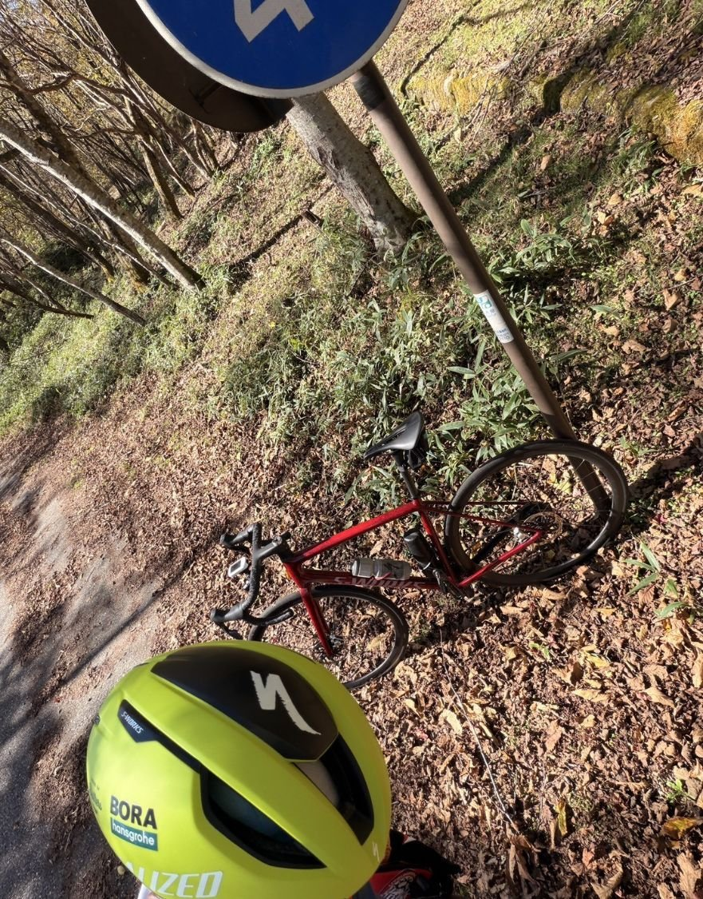

古峰ヶ原でFTP更新。68分289W、そして今後の課題も見えた
今日は古峰ヶ原。久しぶりに、長い登りをしっかり一本走る日だった。結果は約1時間8分・平均約289W。GarminのFTPは281Wに更新されたが、トレーニング設定としてはFTP289Wを採用することにした。数字としては、分かりやすい成果が出た一日である。

約63km・NP253W・TSS189
- 全体62.86km / 2時間20分07秒 / 獲得1,111m / 平均気温15.9℃ / 運動量1,816kJ
- 負荷平均216W / NP253W / IF0.902 / TSS189.3
- 心拍・回転平均136bpm / 最大167bpm / 平均85rpm
- 効果有酸素TE5.0（オーバーリーチ）
- 古峰ヶ原25.41km / 1時間08分14秒 / 平均約289W / NP約290W / 心拍平均154bpm・最大167bpm / 86rpm
1時間を超える登りで、約289Wを維持。今の自分の状態を見るには、かなり分かりやすい一本になった。有酸素TEは5.0で、表示は「オーバーリーチ」。そりゃそうである。
Garminは281W。でも設定は289Wへ
走行後、GarminのFTPは275Wから281Wに更新された。最初はそのまま281Wを採用するつもりだった。ただ、今回の古峰ヶ原は約68分で平均289W。281WをFTPにすると、FTPの約103％を68分維持した計算になる。最近のローラーSSTも、263Wと268Wで以前より余裕を持って走れている。それなら、281Wは今のトレーニング設定としては少し低いかもしれない。ということで、Edge 530は手動でFTP289Wに変更した。
もちろん、289Wが絶対に正しいFTPだと断定するつもりはない。ただ、今のSST強度や実走の感覚まで含めると、トレーニング用の設定値としては289Wが自然に感じる。これまでこのブログではFTP275Wを基準にしてきたが、今後はしばらくFTP289W基準で見ていく。

昔の296Wとは比べない
以前の古峰ヶ原では、約25.25kmを1時間10分05秒・平均約296Wで登った記録がある。タイムは今回の方が速い。でも、昔は古峰ヶ原まで自走で、登り始めるまでに約40km走っていた。今回は車で来て、そこからスタート。登り始める条件は今回の方がずっと良い。事前疲労がある状態の296Wと、条件が良い中での289W。数字だけ並べて優劣は決めない。ただ、今の自分が約68分を290W前後で走れた。そこはそのまま良い材料として受け取る。
前半は物足りない。後半の坂は好き

コースを走ってみて感じたこともあった。前半は、なだらかな登りが多め。もちろん登ってはいるのだが、自分としてはもう少し勾配があった方が好みだった。理由は単純で、平坦寄りの区間としっかりした登りでは、体重の掛け方が違うからである。
私は平坦より上りの方が好きだ。単に坂が好きというより、勾配がある方が体重をペダルに乗せやすい。腰、お尻、ハムを使って、体重ごと押し込む感じ。普段意識している「腰で乗る」という感覚も、上りの方が自然に出しやすい。だから、前半の緩斜面よりも、後半の勾配がしっかりした区間の方が走りやすく感じた。苦しいのは苦しい。でも、こういう「ちゃんと登っている」感じの方が好きである。
35×33でもギリギリだった
ただ、後半の激坂が楽だったわけではない。Aethos2のギアはクランク48/35T、スプロケット10-33Tなので、一番軽いギアは35×33。古峰ヶ原の後半では、このインナーローまで使った。それでも感覚としてはギリギリ。もっと踏み込もうとしても、すでにギアは一番軽いところまで使っている。この辺は、今回走ってみて見えた課題だった。
10-36Tのようなもっと軽いスプロケットを使えば、急勾配は楽になる。でも、今のところすぐ機材側を変えるつもりはない。富士ヒル本番は、古峰ヶ原後半ほどの激坂が続くわけではない。それならまずは、今の35×33のままで、もう少し余裕を作れるようにしたい。
70〜75rpmの高トルク練習を足す
そこで、今後は低ケイデンス高トルクの練習を少し入れてみることにした。ただし、60rpmのような極端な低ケイデンスは使わない。実走でそこまで低い回転を使うことはほとんどないからである。基本は70〜75rpm前後。FTP289W基準なら、最初は75rpm前後・250〜260W程度で、5分を3〜4本くらい。ローラーで、上半身を暴れさせず、腰・お尻・ハムを使って重めのギアを丁寧に踏む。そんな練習から始める予定である。
狙いは、重いギアを踏み潰すことではない。急勾配でケイデンスが下がっても、フォームを崩さずにトルクを維持すること。古峰ヶ原の後半で、インナーローでもギリギリだった状況に少し余裕を作ることである。最初から出力や時間を上げすぎず、嫌な痛みや違和感が出たらその日は終わり。慣れてきたら、本数か出力のどちらか一方だけ少しずつ上げる。そのくらいの慎重さで進める。
でも翌日はやらない
古峰ヶ原を走った翌日、この高トルク練習を試してみようかとも思った。でも、今回はやめた。古峰ヶ原の前日（10月22日）の太平山反時計回りは、太平山が約7分・330W、琴平峠が約14分半・301W、唐沢山が5分台・329WでTSS156.9。その翌日の古峰ヶ原がTSS189.3。2日続けて重い負荷が入っている。完全フレッシュではない状態だったことを考えると、古峰ヶ原の内容はかなり良かったと思う。
しかも、高トルク練習はこれから初めて試すメニュー。疲労が残った状態で試して痛みが出たら、メニューの問題なのか、単純に疲労の問題なのか分からなくなる。なので翌日は回復を優先して、脚が戻った日に改めて試す。
全部を変えずに、弱点だけ補う
今の練習を続ければ、持続力そのものはまだ伸ばせると思う。SST、唐沢ゴルビー、太平山反時計回りはそのまま続ける。そこに、実走に近い70〜75rpmでの高トルク練習を少し足す。富士ヒルゴールドを目指すために、何かを全部変える必要はなさそうだ。今やっていることを続けながら、今回見えた弱点だけ少し補う。古峰ヶ原は、FTP更新だけではなく、次の練習の方向まで見えた一本になった。